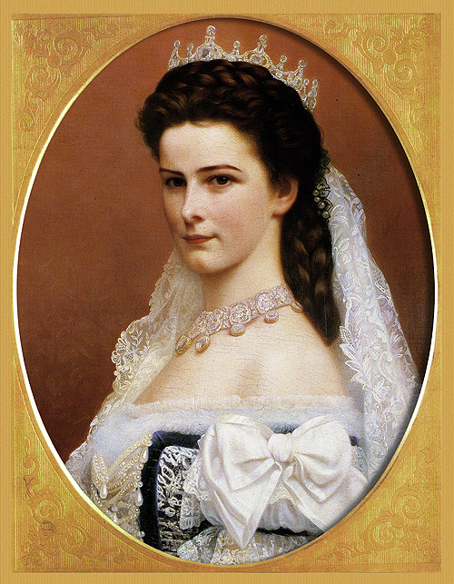

CHẮC đa số bạn đọc, nhất là bạn trẻ, đều có xem phim Sissi mà vai công chúa, do Romy Schneider đóng, đã làm cho các bạn say mê suốt mấy tiêng đồng hồ.
Sissi chính là tên của Hoàng Hậu Elisabeth d'Autriche, nổi tiếng trong Lịch sử, một giai nhân Tây phương mà đời sống cho đến cái chết, là do một định mệnh lạ lùng sắp đặt từ thuở bé. Danh từ “Hoàng Hậu của Cô Đơn” (L’Impératrice de la Solitude) mà nhà văn Maurice Barrès đặt cho bà, có thể gồm cả ý nghĩa chua chát, bi thương của một số kiếp tài hoa đáng lẽ được rất nhiều hạnh phúc, mà chỉ toàn là đau khổ âm thầm.
Con gái út trong gia đình có ba trào gái của Cựu Vương Maximilien I và nữ Quận chúa Ludowika, xứ Bavière, nước Đức, công chúa Sissi ra đời năm 1837. đúng vào đêm Noël, cùng một giờ với Chúa Giáng sinh. Nàng đẹp như một nàng tiên giáng thế.

Lúc bé, tính tình của Sissi đã giống hệt cha, vua Maximilien, một tâm hồn nghệ sĩ, một hiệp khách hào hoa phong nhã, rất ưa thơ mộng, hơn là một ông vua trị quốc. Ông thích làm thơ, đánh nhạc, và có mở một tao đàn gồm 14 chàng nhạc sĩ, cả ngày họa đờn, ngâm thơ. Ông rất ham mê du lịch, khi thì sang Ai Cập để xem Kim tự tháp của vua Chéop, khi thì đi Ý, đi Thụy sĩ, đi Syrie, Tiểu Á Tế Á. Mỗi lần du lịch về, ông tả cho công chúa nghe những thắng cảnh hùng tráng, kể cho nàng nghe những sự tích huyền ảo mê ly...
Công chúa Sissi say sưa nghe cha kể chuyện, và hồn thơ nẩy nở, rạt rào, ngay từ lúc hãy còn là một cô bé ngây thơ. Năm 1852, Sissi mới 15 tuổi, đã yêu một bá tước cũng hay thơ...thẩn như nàng. Tình yêu mới chớm nở, thì người yêu bị chết thình lình. Sissi làm bài thơ sau đây mà nàng cẩn thận chép trong nhật ký:
Ô vous, sombres yeux!
Je vous ai tant contemplés
Que votre image dorénavant
Ne sortira plus de mon coeur.
Jeune et frais amour
Resplendissant comme le mois de Mai!
L'automne est venu
Et tout est déjà fini!
(Than ôi, đôi mắt đầy bóng tối!
ta đã nhìn ngươi biết bao nhiêu lần.
từ nay cầu xin hình ảnh của ngươi
không rời trái tim ta nữa.
Tình yêu tuổi trẻ thấm tươi,
rực rỡ như trời tháng Năm
mùa thu đã đến,
tất cả đã hết rồi! )
Cô công chúa 15 tuổi đã khóc mùa thu, đã khóc tình yêu chết yểu trong mùa Thu! Nghe vang lên tiếng chuông nhà Thờ tiễn hồn người bạc mệnh, làm xáo động hồn thơ, công chúa ghi những cảm xúc ấy trên trang giấy học trò:
Le sort est en jeté.
Richard, hélas, n’est plus!
Le glas sonne, seigneur!
Seigneur! Ayez pitié de moi!
(Thôi số kiếp đành phải thế,
Richard anh ơi! từ nay anh không còn!
tiếng chuông vĩnh biệt rền vang! Chúa ơi!
Chúa ơi! Xin Chúa thương con!)
Trong lúc nhớ nhung, Sissi lại làm thơ, chép vào nhật ký:
J’ai trop longlemps fixé
Mon regard sur ton visage
Et me voici toute éblouie
Par le rayonnement de ta beauté!
Quand le premier rayon de soleil!
Me salue au matin,
Je lui demande toujours
S’il vient de t’embrasser?
Et chaque nuit je prie
Le clair de lune d'or
De te dire en secret
Que je t'aime...
( Đã lâu lắm, từ muôn thuở,
Em nhìn mãi gương mặt anh,
Đến đỗi bây giờ em đẹp rực rỡ,
Nhờ hào quang diễm tuyệt của anh.
Lúc tia nắng mới hừng,
Chào em buổi mai sớm,
Thì em hỏi âu yếm:
Phải ánh nắng vừa mới hôn anh?
Và mỗi đêm em vẫn nhắn.
Ánh trăng tỏ vàng.
Bảo thầm với anh.
Rằng em yêu anh...
Tôi nói thật, tôi chưa được đọc của một cô em nào 15 tuổi mà có giọng thơ thành thực hồn nhiên và cảm động như thế.
Thế rồi một buổi chiều mùa xuân 1854 mọi người đều rộn rịp... quấn quít chung quanh Néné, tức công chúa Hélène, cô gái lớn nhất trong gia đình. Vừa được tin của một vị tướng quan của Triều đình Vienne thân thuộc với gia đình, cho biết: Hoàng đế xứ Autriche, François Joseph, 24 tuổi, muốn cưới công chúa Hélène, tôn làm Hoàng Hậu. Đồng thời, một vị quan hầu cận của Hoàng đế phi ngựa đến trao bức thư của Hoàng đế báo tin ngày hôm sau Ngài sẽ đến lâu đài Possenhofen của Maximilien để thăm Cựu Vương và Quận chúa Ludowika, và làm lễ đính hôn với công chúa Hélène.
Được tin, cả nhà vui mừng rộn rịp, đặt mọi nghi lễ để ngày mai đón tiếp vị Hoàng đế trẻ tuổi. Sissi, có gái út, nữ thi sĩ mơ mộng và tinh nghịch nhất nhà, cứ theo trêu ghẹo người chị cả sắp lên ngôi Hoàng hậu. Công chúa Hélène, đôi má đỏ bừng, sung sướng quá không nói gì được, chỉ hôn lên mái tóc ống ánh vàng gợn sóng của cô em gái chưa đầy 17 tuổi.
Quận chúa Ludowika, mẹ hiền lành âu yếm, lo tập cho Hélène cách thức quỳ gối làm lễ chào Hoàng đế như thế nào, nói với Hoàng đế như thế nào, cho đúng nghi lễ Triều đình. Bà sửa soạn lại đầu tóc của công chúa và gọi thợ may danh tiếng nhất ở Bavière đến may gấp trong đêm ấy một chiếc áo đẹp nhất, để sáns hôm sau Hélène mặt đón vị “Hoàng tử đẹp trai”.
Nên biết rằng Hoàng đế François Joseph và Hélène là hai anh em bạn dì, mẹ của Hoàng đế và mẹ của Hélène là chị em ruột. Nhưng François Joseph đã xin với Đức Giáo Hoàng La Mã cho phép cuộc hôn nhân trái luật ấy.
Sáng hôm sau, lâu đài Possenhofen két hoa kết lá tưng bừng náo nhiệt, kẻ hầu người hạ ra vô tấp nập Mọi người hồi hộp chờ Hoàng đế.
10 giờ, công chúa Hélène còn đứng soi gương đánh lại tí phấn trên đôi má hồng đào, thì nghe tiếng vó ngựa rộn rịp nhịp nhàng mỗi lúc mỗi gần Possenhofen. Vì hoàng đế trẻ tuổi, đi xe tứ mã, có một đoàn lính kỵ mã chạy theo hộ vệ... Nhưng thay vì chạy thẳng vào sân, xe của Hoàng đế ngừng nơi cổng. Có lẽ thấy cảnh vườn rộng lớn, xinh đẹp, cỏ cây đầy bóng mát, hoa nở muôn màu như một bồng lai tiên cảnh, Hoàng đế đi một mình dạo chơi xem vườn, chưa vào lâu đài vội
Tôn trọng sở thích bất ngờ của vị Hoàng đế trẻ tuổi Cựu Vương Maximilien và Quận chúa Ludowika vẫn đứng chờ trước bao lơn, không muốn quấy rầy vị chàng rể oai nghi... mơ mộng...
Ngài bước chậm rãi, ngó say mê hai con thiên nga bơi yểu điệu, duyên dáng trên mặt nước hồ xanh... Bỗng ngài trông thấy một thiếu nữ mặc toàn trắng, đẹp rực rỡ, đôi mắt xanh đầy ánh sáng, tóc vàng óng ánh chảy xuống đến hai bên vai, nhởn nhơ với gió..
Ai đấy nhỉ?
Không phải công chúa Hélène, vì Hoàng đế đã biết mặt Hélène nàng cao lớn hơn, và 22 tuổi.
Thiếu nữ thần tiên đi trên cỏ xanh, chỉ mới độ 15, 16 tuổi, có hai con chó bergers đủng đỉnh đi cạnh nàng. Bỗng nàng chạy đến bá ngay cổ Hoàng đế, và cười dòn tan.
Với giọng nói tinh nghịch và trong như pha lê, nàng bảo:
- Chào Hoàng đế! Chị Hélène của em đang chờ anh trong phòng!
François Joseph bật cười. Ngài đổi ý kiến ngay tức thì, nở nụ cười say mê, nhìn Sissi:
- Không! Anh sẽ cưới em. Hoàng hậu sẽ là em!
Rồi Hoàng đế nắm tay Sissi đi vào trước mặt Cựu Vương Maximilien và Quận chúa Ludowika, khẽ nghiêng đầu bảo:
- Trẫm xin làm lễ đính hôn với công chúa Sissi.
Mọi người đều trố mắt ngạc nhiên. Nhưng Hoàng đế muốn, là Trời muốn.
Ngày 4-3-1854 hợp đồng giá thú được ký giữa Hoàng đế François Joseph 24 tuổi, và Công chúa Sissi, 17 tuổi.
Ngày 20-4, trước khi từ giã lâu đài Possenhofen để đi kinh đô Vienne thành hôn với François Joseph, Sissi viết trong nhật ký 6 câu thơ:
Adieu, demeure silencieuse!
Adieu, vieux chateau,
Et mes premiers rêves d'amour!
Vous saluerez encore le mois de Mai
Mais aujourd'hui je vous dis adieu, chérie,
Je vais être si loin de vous!
(Vĩnh biệt, ngôi nhà yên tĩnh.
Vĩnh biệt, lâu đài xưa,
Và những giấc mơ ái tình đầu tiên của ta!
Các ngươi sẽ còn chào tháng Năm
Nhưng nay ta chào các người thân thương của ta
Ta sẽ đi về một nơi thật xa)
Công chúa đi xe lục mã với đông đủ các chị em của nàng, cả cô Hélène, người chị này đáng lẽ được gả cho Hoàng đế. Hélène vẫn vui vẻ khuyên bảo em nên chiều chuộng Hoàng đế và trung thành với tình yêu của Hoàng đế.
Đến Munich, một đám đông dân chúng đón chào Hoàng Hậu tương lai của xứ Autriche. Một chàng thi sĩ dâng tặng nàng hai câu thơ:
Rose de Bavière à peine éclose
Nous vous saluons sur les rives du Danube!
(Hởi Hoa Hồng của đất Bavière vừa mới nở,
Chúng tôi chào Hoa trên bờ sông Danube!)
Nàng đến đâu cũng được toàn dân chúng đón chào bằng những tiếng “Hoan hô Elisabeth! Hoan hô Elisabeth!”
Đến lâu đài Schoenbrun, một bà mạng phụ của Triều đình dâng lên nàng một tấm chương trình được in rất đẹp, bằng tiếng Đức:
“Zeremoniel bei dem offentlichen Einzug ihrer koniglichen Hoheit, der durchlauchtigsten Prinzessin Elisabeth”.
(Nghi lễ chính thức đón tiếp Công chúa Elisabeth tại Vien)
Ngày 24-4-1854, lúc 7 giờ tối, tại nhà Thờ Augustins, Công chúa Elisabeth làm lễ thành hôn với Hoàng đế François Joseph.
Đức Hồng Y Giáo chủ Rauscheri đọc mấy lời khen ngợi:
“ Từ hồ Constance đến biên giới Siebenburger, 38 triệu thần dân Autriche đặt hoàn toàn tin tưởng nơi Hoàng đế François Joseph và Hoàng hậu Elisabeth, và thân kính chào hai Ngài.
Cầu chúc hai Ngài hoàn toàn trìu mến nhau như một đôi tình nhân trốn trên một hòn đảo giữa những bão tố, một hồn đảo mọc đầy Hoa Hồng và Hoa Tím..”
Hôn lễ cử hành xong, 21 tiếng súng đại bác nổ rền trời, mở màn cho các cuộc liên hoan chào mừng Hoàng Hậu Sissi. Trở về Schoenbrun, Hoàng Hậu và Hoàng đế ra đứng trên bao lơn hàng giờ để chào dân chúng nhiệt liệt hoan hô hai người.
Sau bữa tiệc rất long trọng dùng toàn đĩa muỗng bằng vàng, Hoàng đế và Hoàng Hậu lên tọa vị trên Ngai để tiếp nhận những lời chúc mừng nồng nhiệt của các Hoàng thân, Công chúa, của các quan Đại thần, của Ngoại giao đoàn, và của các phái đoàn dân chúng.
Một giờ khuya, các nghi lễ đã xong, quan khách ra về. Mười hai tên lính cận vệ cầm những cây đèn nến to tướng, tiễn đưa Hoàng hậu Elisabeth về Loan phòng với Hoàng đế.
Bỗng giữa đêm tân hôn tưng bừng xinh đẹp ấy, một trận giông tố ào ào nổi dậy làm sụp đổ bao nhiêu nhà cửa, tung bay các mái ngói, đổ gẫy các cây cối, để thành phố bị tàn phá tơi bời.
Câu chuyện thần tiên của cô Công chúa Noël mới bắt đầu đến đây đã gần như chấm dứt!
Công chúa Sissi lúc 17 tuòi đã có tâm hồn nghệ sĩ, do truyền thống của cha, đến khi làm Hoàng Hậu Elisabeth của Autriche, cũng không bỏ được cái nghiệp chướng phiêu lưu thơ mộng. Chả thế mà Hoàng hậu, khắc hình con chim Hải Âu (La Mouette d’ Océan) trên con dấu của bà, để tượng trưng cho cuộc đời của bà phiêu linh đây đó, thích bay cao, xa đất gần mây, ưa hòa mình trong bão táp!
Ở Triều đình Vienne, bà đã tỏ ra một tâm hồn độc lập, luôn luôn muốn thoát ly ra khỏi khuôn khổ tầm thường như một con chim bị nhốt trong lồng vàng cứ muốn tung lồng bay ra mà chỉ đập cánh vào song
Đã thế, nàng lại còn bị một bà mẹ chồng khủng khiếp, bà nữ Quận chúa Sophie, luôn luôn rất khắc nghiệt đối với các nghi lễ Triều đình. Hoàng hậu Elisabeth, với tính dễ dãi, với tâm hồn thơ mộng, cứ bị bà rày la mãi, và bị những lời đàm tiếu, phê pháo có ác ý, của phần đông các bà mạng phụ, phu nhân. Nhưng nàng bất chấp.
Một hôm có đại tiệc trong Hoàng cung, Elisabeth chủ tọa. Nàng cởi phăng đôi găng ra để ăn thong thả. Toàn thể quan khách đều vô cùng ngạc nhiên. Ngay lúc đó, bà mẹ chồng, nữ Quận chúa Sophie, truyền lịnh cho một nữ tỳ đến tâu khẽ với Hoàng Hậu rằng theo phép xã giao thông thường cũng như nghi lễ bắt buộc ở Triều đình thì Hoàng Hậu phải luôn luôn mang găng suốt trong các bữa đại tiệc. Tức thì Elisabeth trả lời: “Ta không mang găng, và cái thông lệ đó từ nay sẽ bỏ”. Bà mẹ chồng hết sức tức giận nhưng không làm gì được.
Hoàng Hậu thường đi dạo phố buôn bán đông đúc của kinh đô Vienne, một mình với một nữ tỳ Một hôm nàng mua đồ lặt vặt trong một tiệm buôn ở đường Karterstrasse, một đường phố bình dân nhất. Dân chúng bu lại đông nghẹt để xem và hoan hô nàng. Cảnh sát làm phúc trình. Bà mẹ chồng biết được rầy nàng một cách mỉa mai:
- Hoàng Hậu ở kinh đô Vienne mà cũng tưởng như ở miền núi quê mùa của Hoàng Hậu hay sao?
Elisabeth đáp lại liền:
- Thưa Quận chúa, đâu cũng là đất nước của Autriche, và cũng là nhân dân của xứ Autriche
Nàng rất thương dân nghèo. Nàng thường đi viếng các viện mồ côi, các bệnh viện, không sợ các bịnh truyền nhiễm, các nhà thương điên. Nàng rửa chân cho các bà già nghèo khổ.
Một dịp năm mới, nàng xin Hoàng Đế một cuộc phóng thích hơn I30 các tù nhân. Hoàng đế và mẹ phản đối.Nàng phải khóc lóc và dùng hết lý lẽ để yêu cầu Hoàng đế một cuộc đại ân xá phạm nhân. Sau cùng bởi cảm kính lòng yêu nước yêu dân và tình bác ái, nhân đạo của nàng nên Hoàng đế phải nghe theo nàng, ký sắc lệnh tha hàng nghìn tội nhân.
Sau khi sanh được hai gái, hai công chúa kiều diễm, bốn năm sau hôn lễ ngày 21-8.1858. Elisabeth mới sanh một hoàng nam đặt tên la Rodolphe.
Sinh cậu con trai này rất khó khăn, Elisabeth suýt chết. Không ngờ hoàng tử Rodolphe sau này khi lớn lên, sẽ tự tử với người yêu Vetsara, gây ra thảm kịch Mayerling mà các nhà sử sách thường nhắc đến.
Nhờ bác sĩ giỏi cứu mạng sau khi sinh Rodolphe, Elisabeth muốn thoát ly triều đình, liền xin phép Hoàns đế được đi du lịch các nơi. Sự thật, nàng muốn đi xa để thỏa mãn tính ưa phiêu lưu của nàng, và nhất là để tránh xa bà mẹ chồng quá khắc khổ.
Bây giờ người ta gọi nàng là “Hoàng hậu phiêu du” (L’Impéatrice errante).
“Hoàng hậu phiêu du” không phải đi du lịch để hưởng thú nhàn hạ, xem các thắng cảnh, mà chính là để quên những buồn bực ở Triều đình, xa lánh bà mẹ chồng cay nghiệt, hủ lậu, không thích hợp với tính tình cởi mở, hòa nhã, và nhất là nghệ sĩ tính của Hoàng hậu. Hơn nữa, chính nàng đã thố lộ tâm sự với cả Hoàng đế rằng nàng muốn “quên cảnh sống rực rỡ xa hoa của Cung điện” mà chính nàng không ưa. Ở Vienne, bà Hoàng Thái-hậu Sophie nhảy đong đỏng lên khi được báo cáo của đại sứ Autriche ở Pháp gởi về méc với bà và Hoàng đế rằng Hoàng hậu Elisabeth ở Paris đi xe ô tô buýt như một kẻ thường dân. Ở Ai Cập, nàng tìm đến sa mạc, rồi đi lang thang trong sa mạc, giữa cơn nắng cháy, cho đến khi nào khát nước quá và mỏi chân nàng mới quay về. Nàng không cần ai phê bình, chỉ trích, vì nàng như con chim Hải âu bay lượn quá cao, không có mũi tên nào bắn trúng vào nàng được. Đi ngoài phố, nàng không muốn cho ai biết mặt, luôn luôn che chiếc dù, hoặc cái quạt, để tránh những cặp mắt tò mò có thể khám phá ra nàng là Hoàng hậu Elisabeth của Đế quốc Autriche.
Trong Lịch sử Đông Tây, ít có một vị Hoàng hậu nào như thế. Một hôm, sau khi dạo lang thang trên bờ sông Seine để hóng gió, trò chuyện với các người đi dạo mát như nàng mà không biết nàng là ai lúc trở về lâu đài tráng lệ của nàng thì được tin Ông Jules Grévy, Tổng Thống Pháp đến thăm. Tổng Thống Grévy không quen với nghi lễ vua chúa, tỏ vẻ ngượng nghịu, thì nàng tìm cách trò chuyện rất tự nhiên như một người bạn, bỏ hết các tục lệ phiền phức của Triều đình, khiến ông Tổng Thống Pháp càng kinh ngạc và càng kính trọng nàng như một vị Thần nữ. Có hôm ở Côte d’Azur, nàng đi dạo chơi xem các vườn hoa, mà cũng không cho ai biết tên, theo tính quen của nàng. Nàng vào xem vườn hồng rất đẹp của một bà triệu phú, phu nhân của một cựu Đại sứ Autriche. Bà này hách dịch đuổi nàng ra, tưởng một kẻ lạ giả vờ xem hoa để hái trộm hoa. Nàng mỉm cười, xin lỗi rồi đi ra. Tối hôm đó, có người cho con mẹ “đại sứ” biết người thiếu phụ xem hoa lúc sáng chính là Hoàng hậu Elisabeth. Con mẻ hoảng hốt, vội vàng đi xe song mã đến biệt điện của nàng để tạ tội. Hoàng hậu Elisabeth vẫn tươi cười tiếp đón con-mẻ, không hề tỏ mộr chút nào giận dỗi. Hoàng đế François Joseph nghe quan hầu thuật lại câu chuyện trên kia, phì cười bảo: “May phúc cho Hoàng hậu không bị con mụ phù thủy ấy lấy roi quất cho một trận đòn!”
Có lần khác nàng ở Paris, Hoàng đế nghe tin vị Tổng Thống mới của nước Pháp là Sadi Carnot bị ám sát. Ngài biên thư khuyên Hoàng hậu nên coi đó như một bài học, và cần phải thận trọng, giữ gìn. Nhưng nàng không cần, và mỗi khi trông thấy bóng dáng những viên thanh tra mật thám có phận sự phải theo dõi nàng để che chở tính mạng của nàng, thì nàng tìm cách lẻn đi chỗ khác. Nàng muốn đi chơi tự do, đừng có ai theo dòm ngó, coi chừng nàng như một đứa con nít.
Một hôm, nàng đến thăm thành phố Hambourg của Đức. Thấy một lâu dài đẹp quá, nàng muôn vào xem. Đang đi chiếc xe ngựa bình dân nàng bảo xe quẹo vào sân, bị người lính gác cỗng chận lại, nhất định không cho vào. Thấy nàng cứ năn nỉ cho vào xem một lát rồi ra ngay, người lính gắt gỏng:
- Đã bảo cấm người ngoài, không được vào! Đây là Biệt điện nghỉ mát của Hoàng đế nước Đức, chứ không phải một tàng cổ viện.
Bấy giờ nàng mới thỏ thẻ với người lính:
- Tôi là Hoàng hậu Elisabeth, nước Autriche.
Người lính không tin, tưởng là một con mẹ điên bèn cười xòa lên rồi gọi viên Đại úy chỉ huy ở trong trại, với giọng khôi hài:
- Thưa Đại úy, có một bà khách lạ thật đẹp muốn xin phép vào thăm biệt điện.
Viên Đại úy từ trong trại nói vọng ra:
- Không cho vào!
Người lính nói tiếp:
- Người đẹp ấy tự xưng là Hoàng hậu Elisabeth nước Autricne!
Viên đại úy nghe nói có người đẹp, liền ra cổng xem. Té ra ông biết mặt Hoàng hậu Elisabeth, vội vàng đứng thẳng người chào, và hô lên:
- Hoàng hậu Autriche!
Người lính gác cũng hoảng hốt đứng nghiêm, bồng súng chào, và cả trại lính đều cầm súng chạy ra sân, sắp hàng chào.
Nàng được đại úy kính cẩn đưa đi xem khắp biệt điện Nàng rất thỏa mãn, và lúc ra về nàng hốt tất cả tiền ở trong bóp đưa tặng đại úy và anh em binh sĩ. Thật là một giai thoại hi hữu.
58 tuổi, Hoàng hậu Elisabeth vẫn còn tươi đẹp. Có lẽ nhờ một phương pháp do công chúa Diane Poitiers truyền lại và nàng áp dụng rất siêng năng, là mỗi buổi sáng sớm, nàng cưỡi ngựa, cho ngựa chạy nhanh trong một tiếng đồng hồ. Nhờ khí trời có sương, có tia nắng mặt trời mới mọc, mặt nàng ửng hồng lên và cơ thể khỏe mạnh phi thường. Nang bảo sương sớm trong ánh nắng bình minh có tinh chất cải tử hoàn đồng còn hơn là nước suối của nữ thần Jouvence. Hằng ngày nàng chỉ uống sữa tươi và ăn trái cây. Nàng xa lánh các buổi tiệc và chỗ đông người, chỉ ưa đi du lịch, phiêu lưu giữa những cảnh đẹp thiên nhiên và làm thơ. Nàng thường bảo:
- Tôi chỉ có ba người yêu: Núi, Bể và Hiu quạnh.
Nàng chỉ khâm phục một thi sĩ: Henri Heine. Nàng bảo:
- Henri Heine là Thần Thơ.
Nhưng, ai có đọc kỹ những bài thơ của Henri Heine mới cảm thấy một định mệnh lạ thường, bởi Henri Heine là một nhà thơ của Đinh Mệnh! Và bởi Hoàng hậu Elisabeth là một người đàn bà của Định Mệnh. Đó là cái ám ảnh của đời nàng. Trong gia đình của nàng, đã có bao nhiêu người bị bất đắc kỳ tử! Hình như Elisabeth tìm trốn tránh những bóng ma, mà cứ gặp những bóng ma! Này nhé: chị ruột của nàng là nữ Công tước d’Alençon bị chết cháy trong hội chợ Bazar de la Charité. cháu ruột của nàng, nữ Côns tước Mathilde, một cô bé mới có mười hai tuổi cũng bị chết cháy, vì bị cha cấm hút thuốc, một hôm cô em hút lén, bị cha bắt gặp, vội vàng giấu điếu thuốc đang cháy trong túi áo, bổng lửa cháy áo rồi gặp gió cháy bùng lên, khiến cô bé mắc cỡ không dám cởi áo, bị chết thiêu luôn.
Người anh họ của Elisabeth, là vua Louis II ở Bavière, cũng một thi sĩ, bị chết chìm trong một hồ nước trong xanh, giữa những đàn thiên nga đang bơi lội, và ông cũng say mê bơi lội theo đàn thiên nga trắng... Sau cùng là con trai của nàng, thái tử Rodolphe tự tử bên cạnh người yêu Vetsara ở Mayerling.
Thế rồi, một hôm, ngày 10.9.1898, một tin sét đánh từ Genève loan đi khắp Âu Châu: Hoàng hậu Elisabeth d’Autriche bị ám sát!
Mới nghe, không một người nào tin được. Hoàng đế François Joseph bị ám sát hụt mấy lần thì người ta còn hiểu được nguyên nhân, chứ Hoàng hậu Elisabeth bị ám sát, thì thật là chuyện phi lý.
Thủ phạm, bị bắt ngay được tên là Luccheni, một tên vô chính phủ, người Ý, sinh ở Paris năm 1875, khi bị tra hỏi, đã khai ngay:
- Phải giết chết những kẻ làm lớn trên thế giới này!
Hắn là thằng điên. Đáng lẽ hắn chờ cơ hội giết một vị Vua Chúa nào đó, nhưng định mệnh quá oái oăm lại sui hắn gặp một Hoàng hậu và định mệnh quá tàn nhẫn xui Hoàng hậu Elisabeth đúng chiều hôm đó, đi chơi lang thang trên bờ hồ Genève, đang tìm vần thơ, lại gặp một thằng khùng có tâm địa sát nnân. Vô cớ, hắn cầm một con dao chạy tới đâm ngay vào ngực Hoàng hậu Elisabeth...
Nàng tắt thở trên bờ hồ thơ mộng...